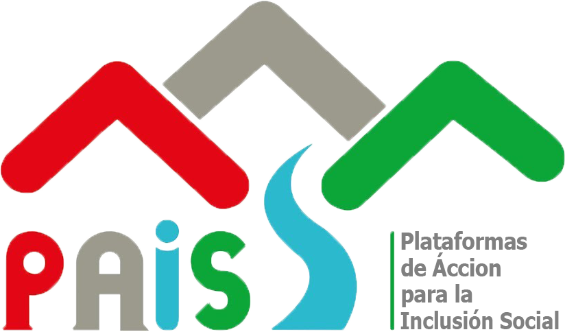

{{getUser.perfil.nombre}}
(U.T. AYACUCHO NORTE)
assignment Bienes patrimoniales
expand_more
attach_money Asignacion presupuestal
local_gas_station Bandeja adquisicion
score Control combustible
expand_more
airplay Cuadro control
extension Configuracion
expand_more